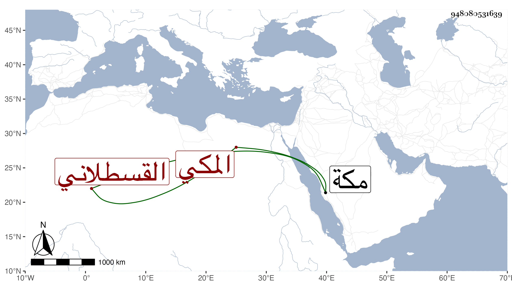

0902Sakhawi.DawLamic.ITO20230111-ara1.EIS1600.948080531639
Biography ID: 948080531639
156
محمد بن أحمد بن محمد بن علي بن الزين محمد بن الأمين محمد بن القطب أبي بكر محمد بن أحمد الجمال أبو عبد الله القسطلاني الأصل المكي ويعرف كسلفه بابن الزين ، أمه عائشة ابنة محمد بن علي العجمي ، أجاز له سنة ثمان وثمانين وسبعمائة فما بعدها النشاوري وابن حاتم والعراقي والهيثمي والأميوطي ورسلان الذهبي وابن الشيخة وآخرون . ومات بمكة سنة ثمان وعشرين .
